리눅스마스터-1급 (2007-03-18 기출문제)
1과목: 리눅스 실무의 이해
1. 운영체제 발전과정의 순서를 바르게 나열한 것은?
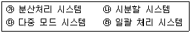
- ㉮ → ㉯ → ㉰ → ㉱
- ㉱ → ㉯ → ㉮ → ㉰
- ㉮ → ㉱ → ㉰ → ㉯
- ㉱ → ㉯ → ㉰ → ㉮
(정답률: 35%)

2. 페이지 교체(Page Replacement) 알고리즘은 페이지 부재가 발생할 때 새로운 페이지를 적재하기 위해서 기존의 페이지를 제거하는 알고리즘이다. 각 알고리즘 중 설명이 바르지 못한 것은?
- FIFO : 가장 먼저 적재된 페이지를 교체한다.
- LRU : 참조된지 가장 오래된 페이지를 교체하며, 페이지들의 참조시간을 저장하는 오버헤드가 있다.
- LFU : 참조횟수를 기준으로 한 교체방법이며 가장 적게 사용된 페이지를 교체한다.
- NUR : 가장 많은 접근을 가진 페이지를 최상위로 전환하는 기법이다.
(정답률: 62%)
3. 커널 2.6.11 에 대한 설명으로 틀린 것은?
- 더 나은 성능을 위한 11번의 패치가 적용되었다.
- 마이너 번호는 11이고, 메이저 번호는 6이다.
- 안정버전의 커널이다.
- 2.6.x부터의 버전에서는 정식 버전과 프리패치 버전으로 나뉜다.
(정답률: 50%)
4. 다음은 리눅스 배포판의 종류 중 무엇에 관한 설명인가?
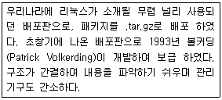
- 슬랙웨어
- 맨드레이크
- 데비안 리눅스
- 레드햇
(정답률: 30%)
5. GNU(Gnu is Not Unix)에 대한 설명으로 틀린 것은?
- GNU 프로젝트에 대한 최초의 문서로는 본 프로젝트의 창립자인 리차드 스톨만의 GNU 선언문이 있으며, 또한 1983년에 쓰여진 발기문도 참고할 수 있다.
- GNU 프로젝트는 초기의 컴퓨터 공동체 안에 충만해 있던 호의적인 상호협력의 정신을 재건하기 위한 구체적인 실현 방법으로 시작되었다.
- GNU에서 구상했던 운영체제를 유닉스와 호환 되도록 결정했던 이유는 유닉스의 독점적 권리를 보장하기 위해서이다.
- 공개 운영체제에 대한 GNU의 첫 번째 계획은 1990년대에 와서 실현되었다.
(정답률: 56%)
6. 다음은 RAID를 형태별로 분류하여 설명한 것이다. 잘못 설명한 것은?
- RAID-0 : 스트라 이핑을 사용하며 패리티 정보나 미러링은 사용하지 않는다.
- RAID-3 : 스트라이핑을 사용하며 패리티 정보를 저장하기 위해 별도의 드라이브를 쓴다.
- RAID-4 : 블럭단위로 스트라이핑을 하며 모든 쓰기 작업에는 패리티 정보를 갱신하는 오버해드가 존재한다.
- RAID-5 : 스트라이핑 대신에 미러링(모든 디스크 블럭은 2개씩 존재) 기법을 사용한다.
(정답률: 50%)
7. SCSI(Small Computer System Interface)의 특징 설명으로 틀린 것은?
- 현재의 SCSI세트들은 직렬인터페이스이며 SCSI포트는 오늘날 대부분의 PC에 장착되어 있다.
- SCSI 기반에 저장기기는 일반적으로 IDE 저장 기기보다 고가이다.
- SCSI는 내․외장 장치를 7개에서 15개까지 연결이 가능하다.
- 스캐너, 프린터등과 같은 주변 장치를 이전의 인터페이스보다 더 빠르고 더 유연하게 통신 할 수 있도록 해주는 인터페이스이다.
(정답률: 48%)
8. 부트매니저에 대한 설명으로 틀린 것은?
- 부트 매니저란 부팅할 때 현재 자신의 컴퓨터에 설치되어있는 다양한 운영체제 중 본인이 필요로 하는 운영체제를 선택하여 부팅할 수 있도록 도와주는 기능이다.
- 리눅스로 부팅할 때 사용되는 부트매니저로는 LILO와 GRUB가 있다.
- LILO/GRUB는 MBR(Master Boot Record)에 설치되기 때문에 리눅스를 설치한 후 윈도즈를 설치하고 부팅하면 LILO/GRUB가 먼저 보여 진다.
- 리눅스와 윈도를 동시에 설치하여 사용하는 것을 다중부팅이라고 한다.
(정답률: 39%)
9. 다음은 무엇을 하는 과정을 보여주는 것인가?
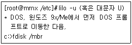
- LILO의 복구
- LILO의 설치
- LILO의 삭제
- LILO의 재설치
(정답률: 58%)
10. 다음 /etc 파일안에 존재하는 중요 디렉토리에 대한 설명으로 틀린 것은?
- /etc/rc.d : 시스템의 부팅과 시스템 실행 레벨 변경 시에 실행되는 스크립트들이 저장되어 있다.
- /etc/shadow : 사용자의 ID 및 사용자의 shell이 저장하는 파일이다.
- /etc/group : 시스템의 그룹에 대 한 정보를 저장하고 있는 파일이다.
- /etc/issue : getty에 의해서 로그인을 위한 프롬프트가 뜨기 전에 출력되는 메시지를 설정하는 파일이다.
(정답률: 37%)
11. X 윈도시스템을 이루는 4가지 요소가 아닌 것은?
- 서버/클라이언트
- X 프로토콜
- Xlib
- Xtoolmanager
(정답률: 74%)
12. 리눅스에서 사용가능한 윈도 매니저에 대한 설명 중 알맞은 것은?
- twm : FVWM2.x를 기반으로 MS 윈도즈 95의 인터페이스와 비슷한 모양을 가지고 있다.
- WindowMaker : 넥스트스텝의 인터페이스를 기반으로 하지 만 장 식 기능이 많지 않아 빠르다.
- FVWM : 가상윈 도 매니저를 실제로 가상 데스크톱을 지원하고, 마우스나 적절한 핫 키를 이용해서 가상 데스크톱을 오갈 수 있다.
- Blackbox : 탭 윈도 매니저이며, 최초의 ICCM 윈도 매니저이다.
(정답률: 39%)
13. 쉘프로그래밍에서 문자와 의미가 바르게 연결된 것은?
- “>>” : 표준 출력을 파일에 기록하는 출력 리다이렉션 기호
- “?” : 0개 이상의 문자와 일치하는 파일 치환 대표 문자 기호
- “$” : 변수 접근 기호
- “;” : 이전의 명령이 성공하면 실행하는 조건부 실행 기호
(정답률: 24%)
14. 프로세스 관리 블록(PCB; Process Control Block)에 유지되는 정보가 아닌 것은?
- 프로세스 고유번호(PIN)
- 프로세스가 할당받은 자원들의 리스트
- 문맥 관련 정보(Context Related Information)
- 슈퍼유저의 패스워드
(정답률: 67%)
15. 일반적인 프로세스의 상태들과 각 상태의 특성이 바르게 연결된 것은?
- running - 필요한 자원을 모두 소유하고 프로세서(CPU)를 요청하고 있는 상태이며 기억장치를 할당 받은 상태이다.
- ready - 프로세서(CPU)를 할당받은 상태이며 기억장치를 할당 받은 상태이다.
- blocked - 입출력 동작등의 완료를 기다리고 있는 상태이며 프로세서(CPU)는 할당되어 있다.
- suspended ready - 프로세서(CPU)를 요청하고 있으나 아직 해당 프로세스에 메모리 공간이 할당되지 않은 상태이다.
(정답률: 21%)
16. OSI의 각 계층 중 어떤 계층에 대한 설명인가?
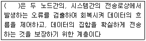
- 물리 계층
- 데이터링크 계층
- 네트워크 계층
- 전송 계층
(정답률: 34%)
17. 다음 ( )안에 들어갈 내용으로 알맞은 것은?
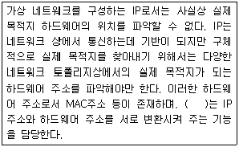
- ICMP
- ARP
- SMTP
- SNMP
(정답률: 55%)
18. 커널에 모듈을 다루는 명령어와 설명이 잘못 연결된 것은?
- /sbin/lsmod : 현재 적재되어있는 모듈들의 정보를 보여준다.
- /sbin/insmod : 적재하고자 하는 모듈을 삽입 한다.
- /sbin/modprobe : 설정된 모듈의 속성을 수정 한다.
- /sbin/rmmod : 현재 적재되어있는 모듈을 제거 한다.
(정답률: 56%)
19. ifconfig의 각 옵션들에 대한 설명으로 맞지 않은 것은?
- <device> : IP를 부여할 장치를 뜻한다.
- <broadcast> : 해당 인터페이스의 마지막 주소를 결정한다.
- ARP : Address Resolution Protocol을 말하는 것으로 호스트의 가상 주소가 네트워크로 접근하는 것을 감지한다.
- PROMISC : 무차별 모드라고 부르는 것으로 해당 서브넷의 모든 패킷을 전부 받아들인다.
(정답률: 53%)
20. 네트워크 기본 설정과 관련된 파일 및 네트워크 명령에 대한 설명이다. 맞지 않은 것은?
- /etc/hosts : IP와 호스트 이름을 포함한 완전한 도메인 이름, 그리고 마지막에 별칭(alias)이 들어있다. DNS 질의를 거치지 않고 직접적으로 주소를 파악하는 데 사용된다.
- /etc/resolv.conf : 네임 서버들을 저장하는 곳으로서 기본적인 설정은 [ search <찾을서버 IP> / nameserver <게이트웨이 IP> ] 이다.
- netstat : 네트워 크 의 상태 를 확인해 보는 명령어로서 라우팅 테이블의 정보를 보여준다.
- dig : 네임서버에 도메인 이름에 관한 질의를 요청하는 명령으로서 2가지 모드로 실행된다.
(정답률: 37%)
2과목: 리눅스 시스템 관리
21. 커널에 대한 설명 중 틀린 것은?
- 일반적으로 커널에는 인터럽트 처리기와 스케줄러, 그리고 슈퍼바이저 등이 포함되어있다.
- 운영체제의 주소공간을 관리한다.
- 리눅스는 마이크로 커널 기반의 구조를 가지고 있다.
- 리눅스 커널은 가상메모리를 지원한다.
(정답률: 9%)
22. 커널을 소스로 설치할 때 리눅스 파일 시스템 표준(FSSTND)에 따라 어느 정도 표준으로 정해져 있다. 커널을 설치하는 디렉토리는?
- /usr/src/linux
- /usr/src/kernel
- /usr/src/install
- /usr/src
(정답률: 14%)
23. 커널을 설정하기 전에 make mrproper 명령어를 실행하는 이유는?
- 이전 커널 컴파일에서 남아 있을지도 모르는 많은 쓰레기 파일들을 정리한다.
- 커널 컴파일시에 적용되는 옵션을 최적화 한다.
- 커널 컴파일시에 필요한 부가 기능들을 자동 설정으로 처리한다.
- 커널에서 사용 할 수 있는 모듈들을 자동 설정하여 설치 시에 융통성을 보장한다.
(정답률: 27%)
24. 커널 컴파일을 위한 커널 설정에 대한 문제이다. 다음 ( )안에 들어갈 내용으로 알맞은 것은?
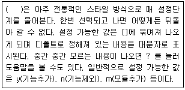
- make config
- make menuconfig
- make xconfig
- make transconfig
(정답률: 27%)
25. 커널 컴파일 명령과 그에 대한 설명으로 맞는 것은?
- make deep : 이전에 수행했던 컴파일 과정에서 생성된 목적파일, 커널, 임시파일, 설정 값 등을 삭제한다.
- make bzImage : 새 커널 만들기를 시작하는 명령이다.
- make modules : 컴파일을 위한 모듈 의존성 관계를 설정한다.
- make modules_install : 컴파일된 모듈을 /lib/modules 아래 설치한다.
(정답률: 41%)
26. 리눅스에 서 사용되는 프린터 설정 방법 중 관련이 없는 것은?
- printconf
- printtool
- /etc/printcap.local
- /etc/printcap.conf
(정답률: 19%)
27. 리눅스에서 스캐너를 사용하기 위해서 필수적으로 설치되어야 하는 패키지는?
- scane
- scaneX
- sane
- saneX
(정답률: 58%)
28. 프린터 관련 명령어와 그 설명으로 맞지 않는 것은?
- lpr의 옵션 중 -P는 사용할 프린터를 지정한다.
- lpr의 옵션 중 -s는 지정된 파일을 스풀 디렉토리로 복사하는 방법을 사용한다.
- lpr -#값을 이용해서 출력할 문서의 장 수를 지정할 수 있다.
- lprm Job 번호로 프린터 작업 중 특정 작업의 취소가 가능하다
(정답률: 20%)
29. 리눅스에서 사운드 카드 설치 시 사운드 카드 설정을 도와주는 프로그램과 관계 없는 것은?
- sndconfig
- System-config-soundcard
- Sysconf-sound
- System-sndconfig
(정답률: 14%)
30. 아래의 명령 실행 결과에 대한 해석으로 옳지 않은 것은?
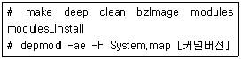
- 컴파일된 모듈은 /lib/modules아래 설치된다.
- 모듈사이의 의존성을 검사하여 /lib/modules 디렉토리 아래 modules.conf파일을 생성한다.
- 커널 컴파일이 성공하면 /usr/src/linux/arch/i386/boot 디렉토리에서 커널이미지를 볼 수 있다.
- 커널 컴파일 과정을 보여준다.
(정답률: 5%)
31. 다음 중 루트(root) 계정에 대한 설명으로 틀린 것은?
- 루트 사용자가 특정파일을 접근(읽기, 쓰기)하기 위해서는 그에 적합한 허가권(permission)을 가지고 있어야 한다.
- 슈퍼 유저(Super User) 라고 지칭되며 모든 사용자보다 우선한다.
- 루트 사용자에서 일반 사용자로 전환할 때 사용하는 명령어는 su 이다.
- 루트 계정은 리눅스 설치시 계정 설정 부분에서 설정한다.
(정답률: 17%)
32. 쉘(shell)과 관련된 설명 중 틀린 것은?
- 로그인 쉘을 변경하기 위한 명령어는 chsh이다.
- 특정 쉘의 종료를 위한 명령어는 exit로 동일하다.
- 쉘은 컴파일 과정이 필요 없는 인터프리터 언어이다.
- 쉘의 실행 퍼미션(permission)이 없으면 강제로 실행할 수 없다.
(정답률: 23%)
33. /etc/passwd 파일의 사용자 계정 정보 중 일부이다. 다음 설명으로 틀린 것은?
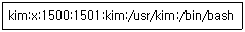
- 사용자 계정 이름은 kim이다.
- 사용자 계정 로그인 쉘은 /bin/bash 이다.
- 사용자 계정 gid는 1500 이다.
- 사용자 패스워드는 /etc/shadow 파일에 암호화 되어있다.
(정답률: 37%)
34. 다음 중 그룹 계정 관리에 관한 명령어와 설명이 알맞은 것은?
- group : /etc/group에 등록되어 있는 그룹을 조회한다.
- groupadd -g 700 kim : 그룹 id를 700으로 그룹명 kim을 생성한다.
- groupmod -n kim lee : kim 그룹의 이름을 lee로 변경한다.
- groupdelete kim : kim이라는 그룹을 삭제한다.
(정답률: 21%)
35. 사용자의 패스워드를 변경해야 하는 날짜의 최소 기간을 30일로 할 때, 패스워드의 만료 기간 및 시간 정보를 변경하는 명령어로 알맞은 것은?
- chage -m 30 user
- chage -W 30 user
- tmout -M 30 user
- tmout -d 30 user
(정답률: 41%)
36. 파일 타입 및 그 설명으로 알맞은 것은?
- 리눅스 파일명은 확장자가 10자를 넘을 수 없다.
- 디렉토리는 디스크에 저장되며 실제 파일을 반드시 포함한다.
- 디렉토리는 다른 파일을 조직하고 액세스하는데 필요한 정보를 가지고 있다.
- /proc에 있는 파일들은 실제로 하드디스크에 존재한다.
(정답률: 23%)
37. 원래 허가 상태가 751인 경우, 다음 연결된 절대 모드와 상대 모드의 결과가 서로 다른 것은?
- g+rw, o-x : 770
- u-w, o+r : 555
- g+wx, o+wx : 777
- a-r, g-x : 301
(정답률: 10%)
38. 파일 시스템 복구에 대한 설명으로 틀린 것은?
- fsck 명령을 사용하여 파일 시스템을 조사 후 손상된 파일을 출력한다.
- fsck는 매개 변수 없이 사용하면 모든 파일 시스템을 검사한다.
- 리눅스 파일 시스템 정보는 /etc/fstab 파일에 보관되어있다.
- fsck를 수행하고 난 후의 종료 코드 1은 재부팅이 필요한 것을 나타낸다.
(정답률: 32%)
39. 파티션 중 속성이 fat인 파일 시스템을 특정 사용자 권한으로 마운트 하려고 한다. 올바른 옵션은 무엇인가?
- mount /dev/hda3 /mnt/dos
- mount -t vfat -o uid=1000 /dev/hda3 /mnt/dos
- mount -t vfat -o umask=751 /dev/hda3 /mnt/dos
- mount -t vfat -o check=r /dev/hda3 /mnt/dos
(정답률: 15%)
40. umount 명령을 사용할 때 버전을 출력하고 종료 하려고 한다. 다음 중 올바른 명령어는 무엇인가?
- umount -V
- umount -v
- umount -a -v
- umount -a -V
(정답률: 15%)
41. 다음 중 데몬과 관련된 설명으로 틀린 것은?
- httpd는 웹 서비스를 해주는 데몬이다.
- 스탠드얼론(Stand alone) 방식은 메모리에 계속 상주하며 서비스하는 방식이다.
- INET 방식은 클라이언트로부터 요청이 있을 때 프로세스가 생성되는 방식이다.
- 수퍼데몬은 INET 방식으로 실행된다.
(정답률: 19%)
42. top명령어에 대한 설명으로 가장 적절한 것은?
- CPU 프로세서를 정렬하는 명령어이다.
- 현재 실행중인 작업을 사용자와 프로세스 ID로 보여주는 명령어이다.
- 각 프로세스의 CPU 사용률과 메모리 사용률을 보여준다.
- 프로세스를 종료시키라는 명령어이다.
(정답률: 25%)
43. 스레드에 의해 생성된 agent 라는 이름의 여러 프로세스를 모두 강제로 종료하고자 한다. 알맞은 명령은 무엇인가?
- kill -1 agent
- killall -l -9 agent
- kill agent
- killall agent
(정답률: 50%)
44. 다음 중 agent 라는 실행 파일을 foreground로 실행 후 background 실행으로 전환하는 방법에 대해 올바르게 기술한 것은 무엇인가?
- agent &를 이용하여 실행한다.
- agent를 실행한 후 CTRL - D를 이용하여 전환한다.
- agent를 실행한 후 CTRL - Z, bg를 입력한다.
- agent를 실행한 후 CTRL - C를 이용하여 종료한 후 bg를 입력한다.
(정답률: 28%)
45. 다음 중 실행 레벨에 대한 설명 중 맞는 것은 무엇인가?
- 실행 레벨 0은 단일 사용자 모드를 의미한다.
- shutdown 명령은 실행 레벨 1로 진입하도록 한다.
- 시스템 운영 중 실행 레벨은 변경이 가능하다.
- 실행 레벨 6에서는 보통 네트워크 설정 없이 부팅하도록 설정되어 있다.
(정답률: 32%)
46. RPM에 대한 설명으로 틀린 것은?
- RPM은 Redhat Package Manager의 약자이다.
- 소스 자체를 컴파일된 바이너리 파일로 묶어둔 것으로 컴파일이 필요 없다.
- 레드햇 계열뿐 아니라 많은 배포판이 RPM 방식을 채택하고 있다.
- 새로운 시스템 구성 요소를 RPM으로 추가설치 하면 기존의 파일은 삭제된다.
(정답률: 53%)
47. ihd-2.4-1.i386.rpm 패키지의 설치 관련된 사항의 설명으로 틀린 것은?
- i386은 일반적으로 32비트 인텔 CPU용 패키지임을 나타낸다.
- ‘rpm --test ihd-2.4-1.i386.rpm’ 패키지를 설치한 후 충돌 사항이 있는지 점검한다.
- ‘rpm -qa | grep ihd’ 은 시스템 내에 ihd 관련 프로그램이 설치되었는지 알아보는 명령어이다.
- ‘rpm -e ihd’ 는 패키지를 제거할 때 쓰는 명령어 이다.
(정답률: 40%)
48. ihd-3.4-1.i386.spec을 이용하여 RPM을 만들려고 한다. 바이너리와 소스패키지를 모 두 만들며 패키지를 만든 후 build 디렉토리를 지우려고 할 경우, 다음 명령 중 올바른 것은?.
- rpmmake -bp --delete ihd-3.4-1.i386.spec
- rpmmake -bb --clean ihd-3.4-1.i386.spec
- rpmbulid -bi --delete ihd-3.4-1.i386.spec
- rpmbulid -ba --clean ihd-3.4-1.i386.spec
(정답률: 28%)
49. 다음은 ihd.c 라는 소스파일을 gcc 컴파일러를 이용하여 ihd 라는 실행파일로 만들 때 중간 과정 및 결과를 나타낸 것이다. (가)에서 (라)까지 바르게 설명된 것은?(순서대로 (가), (나), (다), (라))
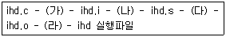
- C 전처리기, C 컴파일러, 어셈블러, 링커
- C 전처리기, 어셈블러, C 컴파일러, 링커
- C 전처리기, C 컴파일러, 링커, 어셈블러
- C 전처리기, 링커, C 컴파일러, 어셈블러
(정답률: 18%)
50. 다음 (가), (나)와 같은 조건으로 tar 명령어를 실행하려고 할 때 보기 중 명령어를 올바르게 짝지은 것은?(순서대로 (가), (나))
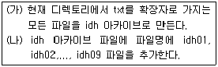
- tar tvf idh.tar *.txt
tar xvf idg.tar idh0* - tar tvf idh.tar *.txt
tar rvf idg.tar idh0? - tar cvf idh.tar *.txt
tar xvf idg.tar idh0* - tar cvf idh.tar *.txt
tar rvf idg.tar idh0?
(정답률: 40%)
51. 다음 중 logrotate의 기능 설명으로 틀린 것은?
- 아파치 로그 파일 사이즈를 절약하기 위해 개발되었다.
- 하루, 주, 월 단위로 로그 파일을 분리할 수 있다.
- 분리한 로그 파일의 퍼미션을 조절할 수 있다.
- 분리한 로그 파일의 압축 여부를 지정할 수 있다.
(정답률: 15%)
52. 다음 중 리눅스 부팅시 발생한 로그를 보기 위한 명령과 그 설명이 맞는 것은?
- syslog - 데몬으로 구동하며 네트워크를 통해 메시지를 전달 할 수 있다.
- lastlog - 마지막으로 부팅된 로그 정보를 포함하여 보여준다.
- dmesg - 부팅시 발생한 메시지를 기록한다.
- udev - 부팅시 초기화된 장치 정보를 같이 출력한다.
(정답률: 25%)
53. 다음 중 last 명령과 관련하여 틀린 것은?
- lastlog 파일의 내용을 보여준다.
- 마지막으로 로그인한 사용자 정보를 보여준다.
- 일반적으로 /var/log/wtmp 파일에 기록한다.
- 잘못된 로그인 시도는 lastb로 확인할 수 있다.
(정답률: 20%)
54. 시스템에 로그인한 모든 사용자에게 메시지를 보내려고 한다. 이때 사용할 수 있는 명령은 무엇인가?
- talk
- wall
- write
- chat
(정답률: 16%)
55. 다음 중 ssh-agent에 대한 설명으로 옳은 것은?
- ssh-agent를 이용하는 경우에는 반드시 패스워드를 사용한 로그인만 가능하게 된다.
- ssh-agent는 일반적인 통신 프로토콜을 암호화할 수 있는 터널링 기능을 제공한다.
- 공개키/비밀키 방식으로 접근할 때 사용을 편리하게 하기 위한 도구이다.
- 사용자의 비밀키를 생성하기 위한 도구이다.
(정답률: 30%)
56. 다음 중 ssh-keygen에 대한 설명으로 옳은 것은?
- Two-Fish 알고리즘을 이용한 키를 생성한다.
- ssh 프로토콜 버전 2에서 사용하기 위해 개발 되었다.
- 생성될 키의 bit 사이즈는 항상 2048로 고정 된다.
- DSA, RSA 알고리즘을 선택하여 사용할 수 있다.
(정답률: 50%)
57. 다음 설명에 맞는 명령어는 무엇인가?
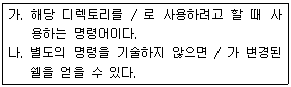
- chfn
- chattr
- chroot
- chgrp
(정답률: 24%)
58. 하루에 한번씩 매 00시 정각에 백업을 하기 위해 crontab을 설정하였다. 빈 칸에 알맞은 명령은 무엇인가?
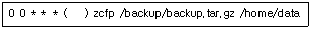
- tar
- cpio
- zcat
- rsync
(정답률: 30%)
59. 다음 중 cpio에 대한 설명으로 옳은 것은?
- tape 장치에 백업하기 위한 도구로 개발되었다.
- 대용량의 파티션을 백업할 때 분할하여 백업하기 용이하다.
- 다수의 파일 중 중복된 파일을 검사하기 위한 도구이다.
- 네트워크를 통해 원격지로 백업하기 위한 도구이다.
(정답률: 27%)
60. 다음 중 조건에 맞는 명령은 무엇인가?
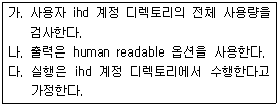
- df -sh
- du -sh
- dd -sh
- di -sh
(정답률: 34%)
3과목: 네트워크 및 서비스의 활용
61. CGI(Common Gateway Interface)는 데이터 베이스를 웹에 연동할 수 있다는 장점으로 인해 초기에는 많이 사용되었으나 최근에는 점차 다른 솔루션 등으로 많이 교체되고 있다. CGI 가 점차 사용량이 줄어가는 이유라고 보기 어려운 것은?
- 프로세스의 생성과 초기화에 상당한 시간이 필요하다.
- 여러 개의 CGI 스크립트를 계속해서 동작시키면 프로세스가 많이 생성된다.
- CGI 구현에 사용가능한 언어가 C 와 Perl 로 제한적이다.
- 대용량 서비스 구현 시 서버내의 메모리 자원의 부족을 야기할 수 있다.
(정답률: 12%)
62. 저렴한 비용으로 회사 홈페이지를 구축하기 위하여 리눅스 환경에 Apache 웹 서버와 PHP, MySQL을 설치하였다. 이를 선택한 이유에 대한 설명으로 틀린 것은?
- MySQL은 공개된 객체지향형 데이터베이스이다.
- Apache는 리눅스 배포판에서 대부분 RPM 패키지로 제공되어 구하기 쉽고, 매우 많은 사용자들이 사용하고 있다.
- PHP는 다양한 데이터베이스 연동 API를 지원하고 있다.
- PHP와 MySQL을 이용하여 동적인 HTML 구현이 가능하다.
(정답률: 19%)
63. 아파치 서버의 설정을 조사하던 중 “ServerType standalone” 으로 설정된 항목을 발견하였다. 이 서버는 어떤 특성을 가지도록 설정 되었는가?
- Server는 standalone으로 설정되어 특수한 user 만이 접속이 가능하다.
- 이 설정은 데몬이 커널 프로세스 상에서 항상 작동되고 있으므로 외부의 클라이언트에 신속하게 반응하는 반면 데몬의 수가 많아지면 많아질수록 시스템의 자원을 많이 차지하도록 설정되어 있다.
- 이 설정은 클라이언트의 요청이 있을 때만 대응하는 것으로 슈퍼데몬에 의해서 실행이되도록 설정되어 있다.
- 이 설정은 리눅스 환경에서 아파치를 사용하기 위하여 설정해주는 기능이다.
(정답률: 32%)
64. 다음 중 아파치 웹서버 설정에 대한 설명으로 틀린 것은?
- 서버루트 디렉토리의 기본경로는 ServerRoot "/usr/local/apache"에서 설정해준다.
- “MaxKeepAliveReqeusts 100” 설정은 지속적인 접속동안에 허용할 최대 요청횟수를 지정하는 것으로 최대 성능 향상을 위해서는 보통 높은값을 이용한다.
- “Timeout 300” 설정은 서버에 요청한 정보를 받을 때 소요되는 시간을 정해주는 것으로 단위는 밀리세컨드 이다.
- “KeepAlive On” 설정은 지속적인 접속, 즉 한번 연결에 대하여 한번이상의 요청을 허용 할 것인가 여부를 결정하는 부분으로 기본값이 on 으로 되어있다.
(정답률: 19%)
65. 동시에 아파치 서버에 접속할 수 있는 클라이언트의 개수를 지정해주기 위해 “MaxClients 150”과 같이 설정하였다. 다음 설명 중 틀린 것은?
- 이 값을 늘리거나 줄일 경우 MinSpareServers, MaxSpareServers, StartServers 의 값도 같이 조정해 주어야 한다.
- 151번째의 Client 의 요청은 앞의 요청이 끝날 때 까지 대기상태로 있어야 한다.
- 이 설정은 아파치 서버가 많은 자원을 낭비하여 서버부하가 생기는 것을 막기 위해 사용 된다.
- 이 설정을 사용하기 위해서는 반드시 KeepAlive 가 on 으로 설정되어 있어야 한다.
(정답률: 12%)
66. 아파치의 동적공유객체(DSO:Dynamic Shared Object)에 대한 설명으로 적절하지 않은 것은?
- 해당 모듈을 필요시 적재가 가능하므로 리소스의 효율적인 사용이 가능하다.
- 설정파일에서 LoadModule 지시자로 지정하면 동적으로 적재할 수 있다.
- DSO 방식을 사용하게 되면 웹서버 구동 시간이 짧아진다.
- 새로 개발한 모듈 반영시 아파치를 재 컴파일하지 않고도 사용할 수 있다.
(정답률: 16%)
67. 아래와 같은 설정을 가지는www.crypto.com 아파치 웹서버에 대해 "http://www.crypto.com/~stegano/index.html"를 요청했을 때 실제로 접근되는 파일은?
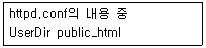
- /home/public_html/index.html
- ~stegano/index.html
- /home/crypto/public_html/index.html
- /home/stegano/public_html/index.html
(정답률: 27%)
68. 아파치의 가상호스트 설정에 대한 아래의 설명 중 틀린 것은?
- IP 기반 가상호스팅은 IP 주소를 많이 보유하고 있는 곳이나 사설 IP를 사용하고 있는 인트라넷 환경에서 적합한 방법이다.
- 이름기반 가상호스팅 서비스를 하기 위해서 가상의 IP가 필요하므로 먼저 ifconfig와 route 명령어를 이용하여 사용자가 가지고 있는 LAN 카드에 가상의 IP를 추가해 주어야 한다.
- 이름기반 가상호스팅 서비스를 하기 위해서는 apache.conf 파일을 열어서 기본설정 값을 수정하여야 한다.
- 이름기반 가상호스팅은 규모가 작은 기업이나 개인에게 할당되는 IP의 수는 제한적이며 몇 백개의 웹 호스팅을 운영하고자 할 때 유용한 방식이다.
(정답률: 5%)
69. 아파치 설치 후 정상적인 동작여부를 체크하기 위하여 싱글 프로세스 모드로 구동시키고자 한다. 이때 유용한 httpd 명령어 옵션은?
- httpd -X
- httpd -f
- httpd -v
- httpd -s
(정답률: 15%)
70. MySQL 설치 시 configure 과정에서 사용된 옵션에 대한 설명으로 적절하지 않은 것은?
- --prefix=/home/mysql : MySQL을 설치할 디랙토리를 결정하는 옵션
- --bindir=/usr/bin : DB가 저장될 디렉토리를 결정하는 옵션
- --with-charset=euc_kr : DB에서 지원할 언어 설정 옵션
- --with-mysqld-user=mysql : MySQL의 보안을 강화하기 위해 mysqld를 일반사용자 mysql로 구동할 것을 지정하는 옵션
(정답률: 19%)
71. SSL(Secure Sockets Layer)에 대한 설명으로 틀린 것은?
- 보안가상호스트 설정 시 SSLCertificateKeyFile은 비밀키 이름과 그 위치를 아파치에게 알려주는 역할을 한다.
- SSL은 TCP와 응용계층 사이에 존재하는 표현계층서비스로 플랫폼과 어플리케이션에 독립적이다.
- SSL은 기본적으로 443번 포트를 사용한다.
- SSL은 클라이언트가 최초 서버 접속 시 서버의 대칭키를 받아서 인증한 후 최종적으로 메시지는 RPC를 통해 공개키를 이용하여 암호화한 후 주고 받는다.
(정답률: 12%)
72. 삼바서버의 환경설정에 대한 설명으로 틀린 것은?
- 주석으로 ‘# 내용’, ‘// 내용’, ‘; 내용’ 등을 사용 할 수 있다.
- 삼바서버의 환경파일은 /etc/samba 에 smb.conf 파일로 되어있다.
- 삼바에서는 윈도우즈와 같이 워크그룹도 설정 할 수 있다.
- hosts allow 설정을 통해 삼바서버에 접속이 가능한 호스트를 설정할 수 있다.
(정답률: 14%)
73. 클라이언트가 삼바서버에 접속할 때 부여할 수 있는 인증레벨에 대한 설명으로 틀린 것은?
- share : 사용자가 요청한 자원을 연결해 주기전에 서버에 로그온 하기위한 사용자/패스워드 인증을 거치지 않는다.
- user : 기본 보안 정책으로 user에 등록되면 사용자/패스워드 인증을 거치지 않는다.
- server : 사용자계정의 인증처리를 현재시스템에서 하는 것이 아니라 SMB 프로토콜을 지원하는 다른 서버를 통해 처리하는 방식이다.
- domain : 사용자 계정 인증 정보처리를 윈도우즈 NT 도메인에서 처리하는 방식이다.
(정답률: 16%)
74. 아래의 삼바에 대한 설명 중 틀린 것은?
- ‘/usr/bin/smbadduser crypto : stegano’ 로 사용자 추가 시 ‘:’ 의 앞부분은 리눅스 사용자 계정이고, 뒷부분은 윈도우즈 사용자 이름을 나타낸다.
- testparm 명령은 smb.conf 파일의 문법적인 오류를 체크한 후 오류가 없으면 마지막에 OK메시지를 보여준다.
- smbclient -L 210.101.245.11 로 삼바서버의 상태를 점검해 볼 수 있다.
- 윈도우즈에서 리눅스삼바에 접근하는 것을 그리 어렵지 않다. 윈도우즈 탐색기를 열어 네트워크 환경을 클릭하면 smb.conf파일에서 지정한 워크그룹 이름이 나타난다.
(정답률: 24%)
75. SWAT(Samba Web Administration Tool)은 삼바를 설정할 수 있는 유틸리티이다. 이에 대한 설명으로 틀린 것은?
- 기본적으로 포트번호 901번을 사용한다.
- 웹에서 루트계정으로 사용이 가능하다.
- SWAT 프로그램은 새로이 시작시 /etc/samba/smb.conf 파일을 여는데, 열 때 모든 주석문을 제거하기 때문에 이 프로그램을 실행하기 전에는 반드시 현재 smb.conf 파일을 백업하여야 한다.
- SWAT 는 모든 설정이 끝나면 root 계정으로 #swat -f /etc/samba/smb.conf를 실행시켜 주어야 한다.
(정답률: 16%)
76. NFS(Network File System)에 대한 설명으로 틀린 것은?
- NFS로 서버와 클라이언트가 연결되어 있으면 NFS 서버의 자원에 접근할 때마다 서버를 체크하므로 네트워크 트래픽이 걸려 속도가 느려지는 단점이 있다.
- NFS는 부호체계가 다른 시스템과의 접속시 자동으로 부호변환을 해주는 기능을 가지고 있다.
- NFS서버와 클라이던트가 파일을 보내거나 수정하는 프로그램으로 현재는 TCP/IP를 이용하고 있다.
- NFS는 선마이크로시스템즈 사에 의해 개발되었으며, 컴퓨터들간의 통신방법으로 RPC(Remote Procedure Call)을 사용하고 있다.
(정답률: 15%)
77. 다음은 NFS(Network File System) 설정파일인 /etc/exports 파일의 설정 예이다. 아래의 설명 중 틀린 것은?
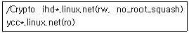
- ihd1.linux.net에서 /Crypto 디렉토리를 마운트 하면 root 계정을 사용한다.
- ycc1.linux.net에서 /Crypto 디렉토리를 마운트 하면 읽기가 가능하다.
- /Crypto 디렉토리는 여러개의 클라이언트와 마운트 될 수 있다.
- ihd1.linux.net에서 /Crypto 디렉토리를 마운트 하면 인증되지 않은 액세스도 가능하다.
(정답률: 20%)
78. NFS 유틸리티에 대한 설명 중 틀린 것은?
- showmount -e는 NFS에 발생시킨 요청의 총 개수를 보여준다.
- nfsstat -s를 실행하면 NFS 서버의 상태만을 보여준다.
- nhfsstone는 시간당 부하의 수, 전송률, 실패율 등의 NFS에 관련된 데이터를 제공한다.
- showmount는 mount 데몬에 NFS 서버에 대해서 질의를 하여 사용 중인 상태를 표시한다.
(정답률: 19%)
79. 아래의 ProFTP 환경파일설정을 설명한 것 중 틀린 것은?
- MaxInstances : ProFTP 서버가 Inetd 모드일때 최대 접속 가능한 사용자수를 지정한다. Standalone 모드인 경우는 아무런 효과가 없으므로 주석으로 해주면 된다.
- AllowOverwrite : 사용자가 FTP 서버에 접속하여 새로 전송하려고 하는 파일이 기존에 있는 파일이 있을 때 어떻게 할 것인가에 대한설정이다.
- RequireValidShell : /etc/shells 파일에 정의되지 않은 셀을 사용하는 사용자에게 FTP 접속을 허락하거나 거절하는 것에 대한 지정이다.
- UserAlias anonymous ftp : 사용자가 FTP 서버에 접속할 때 anonymous 사용자로 접속하면 ftp 사용자로 접근하게 하는 지정이며, 이 설정은 anonymous 사용자가 ftp 사용자로 FTP 서버에 접속하여 이용하는 것이 된다.
(정답률: 23%)
80. ProFTP의 Limit 항목의 command에 대한 설명이 틀린 것은?
- MKD : 새로운 디렉토리를 만들 경우
- RETR : 서버에서 클라이언트로 파일을 전송할 경우
- RNTO : 디렉토리의 이름을 바꿀 경우
- RNFR : 디렉토리를 삭제할 경우
(정답률: 33%)
81. 메일을 위한 기본적인 세가지 컴포넌트 중 유도라나 아웃룩 같은 프로그램은 어느 분류에 속하는가?
- MUA(Mail User Agent)
- MTA(Mail Transfer Agent)
- MDA(Mail Delivery Agent)
- MRA(Mail Receiver Agent)
(정답률: 12%)
82. Crypto.com에서 발송된 메일을 해당 메일 서버가 수신해서 실제로 Crypto.com에서는 정상적으로 메일을 수신한 것처럼 인식하게 하고, 그런 다음 해당 메일서버에서 삭제하여 실제 사용자는 메일을 수신하지 못하게 설정하는 방법은?
- /etc/mail/access에 Crypto.com RELAY를 설정한다.
- /etc/mail/access에 Crypto.com DISCARD를 설정한다.
- /etc/mail/access에 Crypto.com REJECT를 설정한다.
- /etc/mail/access에 Crypto.com GRANT를 설정한다.
(정답률: 23%)
83. 스펨메일 서버의 공격을 배제시키기 위한 설정 후 데이터베이스를 갱신하기 위하여 사용하는 명령어로 적합한 것은?
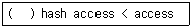
- make
- makesendmail
- makemap
- makeaccess
(정답률: 24%)
84. procmail 에 대한 설명으로 적절하지 않은 것은?
- 사용자 스스로 자신을 스팸메일에서 보호하는 방법이다.
- 자신의 홈디렉토리에 *From: .*spamhost.com 과 같은 형식으로 .procmailrc 파일을 생성하면 된다.
- procmail이 스팸메일을 걸러내는 방법은 MTA(Mail Transfer Agent)이다.
- procmail을 사용하게 되면 많은 스펨메일이 전송된다 하더라도 메일서버는 모두 받아들이게 되어 서버의 부하가 커질 수 밖에 없다.
(정답률: 6%)
85. 현재 메일서버의 이름은 mail.crypto.or.kr 이다. 발신자의 도메인 주소를 crypto.or.kr로 표시되게 하기 위해서는 sendmail.cf파일의 설정을 변경하여야 한다. 다음 중 알맞은 것은?
- DMcrypto.or.kr
- Dj$crypto.or.kr
- CHcrypto.or.kr
- RMcrypto.or.kr
(정답률: 0%)
86. PGP에서 지원하는 4가지 보안기능에 대한 설명으로 틀린 것은?
- 기밀성(Confidentiality)은 비밀키를 공유하는 사람들만 암호화된 파일을 복호화 할 수 있는 성질을 나타낸다.
- 인증(Authentication)은 상대방의 신원에 대한 보증으로 제 3자가 자신과 교신하는 상대방인척 하는 것을 막는다.
- 무결성(Integrity)은 메시지를 주고받는 상대방만이 메시지의 확인이 가능하다는 것에 대한 보증이다.
- 부인방지(Non-repudiation)는 파일을 보내지 않고도 보냈다고 부인할 수 없다는 것에 대한 보증이다.
(정답률: 17%)
87. 다음은 슈퍼데몬에 대한 설명으로 틀린 것은?
- 슈퍼데몬은 /etc/xinetd.conf 설정파일을 읽으며, inetd는 자신이 관리하는 포트로 네트워크 접속 요청이 들어오면 곧 이를 tcpd 프로그램으로 전송한다.
- tcpd는 요청의 승낙여부를 hosts.allow와 hosts.deny 파일에 포함된 규칙에 의해 결정하며, telnet 데몬은 보통 standalone 모드로 관리하는 것이 일반적이다.
- TCP Wrapper는 tcpd가 요청의 승낙여부를 hosts.allow와 hosts.deny 파일에 포함된 규칙에 의해 결정하고, 요청이 허용되면 해당서버 프로세스를 시작하는 매커니즘을 말한다.
- 인터넷 서비스에서 여러 개의 데몬을 함께 관리하기 때문에 슈퍼데몬이라 부른다.
(정답률: 10%)
88. xinetd(Extended Internet Service Daemon)의 컴파일과 설치는 ./configure; make; make install과 같은 일련의 명령을 통해 이루어진다. 최근에 사용 빈도가 점차 늘어가는 IPv6 의 사용을 지원하기 위해서 사용할 수 있는 컴파일 옵션은 무엇인가?
- --with-libwrap option
- --with-loadavg
- --with-disDoS
- --with-inet6
(정답률: 30%)
89. DNS 서버를 위한 BIND를 설치 후 주요파일을 설정하여야 한다. 아래의 각각의 파일에 대한 설명이 적절하지 않은 것은?
- /etc/named.conf 파일은 루프백 IP에 관한 IP 주소를 가진다.
- /var/named 에는 네임서버의 zone 파일이 존재한다.
- /var/named/localhost.zone 파일은 각각의 호스트에 대한 정보를 가진다.
- /var/named/named.rev 파일은 사용하는 도메인에 대한 역 변환 데이터베이스 이다.
(정답률: 29%)
90. 프락시 서버에 대한 설명으로 적절하지 못한 것은?
- proxy 서버는 자체적으로 캐시를 가지고 있어서 웹 브라우저를 이용한 인터넷 서핑시 느린 속도를 보완해주기 위한 방법이다.
- proxy 서버의 설정을 위하여 squid를 설정 하여야 하는데, cache_dir /usr/local/squid/cache 1000 16 256과 같은 설정으로 캐시 디렉토리의 크기를 정해줄 수 있다.
- squid 설정이 변경되면 #/usr/local/squid/bin/squid -restart로 데몬을 부팅하여야 한다.
- squid 데몬의 종료는 #killall -9 squid 로 수행 할 수 있다.
(정답률: 16%)
91. NIS(Network Information System)에 대한 설명으로 적절하지 못한 것은?
- NIS 도메인이란 NIS 데이터베이스 정보를 공유하고 사용하는 호스트들의 그룹이름이라고 할 수 있다.
- 슬레이브 서버는 단지 NIS 데이터베이스의 복사본을 가지고 있으며, 이것들이 갱신될 때 마다 마스터 서버로부터 이 복사본들을 받는다.
- ypbind, ypswitch, ypcat, yppoll, ypmatch 와 같은 클라이언트 프로그램 중 ypbind는 항상 실행중에 있어야 한다.
- NIS 도메인은 DNS 도메인명과 같은 문자열을 가진다.
(정답률: 24%)
92. 시스템의 해킹을 미연에 예방하고, 해킹에 의한 시스템의 변형을 방지하기 위한 기술적 대처방안으로 알맞지 않은 것은?
- inetd 서비스를 xinetd 서비스로 교체한다.
- tripwire 같은 프로그램을 설치하고, 체크섬 파일을 하드디스크에 기록할 때, 퍼미션을 잠가둔다.
- password 는 md5 기반의 shadow 시스템으로 운영하도록 한다.
- 시스템의 주요 바이너리 파일들의 변경 여부를 조사하고 복구한다.
(정답률: 10%)
93. sendmail.cf 파일은 7개의 섹션으로 구성되어 있다. 이에 대한 설명으로 적절하지 않은 것은?
- Local Info 섹션은 로컬호스트의 구성정보를 정의하는 부분으로 호스트이름, 메일 도메인등의 정보가 정의된다.
- Option 섹션은 sendmail의 환경을 정의하는 옵션을 정의하는 부분이다.
- Trusted Users 섹션은 발신자의 주소를 변경할 때 사용된다.
- Message Procedure 섹션은 해당 메일 프로그램에 적당한 포맷으로 메일을 다시 작성할 때 필요한 규칙이 정의되어 있다.
(정답률: 20%)
94. 아래는 CVS를 이용한 프로젝트 절차이다. ( )에 들어가기에 적절한 것은?
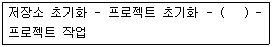
- 저장소에 작업파일 업로드
- 작업공간마련
- 작업내용저장
- 디버깅
(정답률: 27%)
95. 아파치서버는 서버에 접속하는 클라이언트 IP를 확인하고 확인한 주소를 DNS 서버에 다시 의뢰하는 작업을 하기 때문에 상당한 시간을 요하게 된다. 로그를 client 의 도메인 이름을 기록하려면 관련되는 설정 방법은?
- HostnameLookups Off
- HostnameLookups On
- LogLevel warn
- LogLevel Domain
(정답률: 39%)
96. TCP/IP, 이더넷층에서 이루어지는 공격방법으로 Handshaking 의 취약점을 이용하는 서비스 거부 공격은?
- SYN Flooding
- Spoofing
- Sniffing
- Buffer Overflow
(정답률: 28%)
97. 시스템과 서비스에 접근하기 위해 주체에 대한 잘못된 정보를 제공하는 공격으로 악용하고자 하는 호스트 의 IP 주소로 바꾸고 이를 통해 해킹을 하는 것은?
- SYN Flooding
- Spoofing
- Sniffing
- Buffer Overflow
(정답률: 15%)
98. 네트워크를 통해 많은 컴퓨터에 자기 자신의 복사본을 보낼 수 있는 프로그램과 관련 있는 것은?
- 백도어
- 바이러스
- 웜
- 트로이목마
(정답률: 40%)
99. 다음은 main() 함수에서 호출한 bof() 함수프로그램이다. 아래의 프로그램에서 연상되는 해킹 공격은 ?
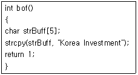
- SYN Flooding
- Spoofing
- Sniffing
- Buffer Overflow
(정답률: 32%)
100. 다음 중 IDS(Intrusion Detection System)에 대한 설명으로 틀린 것은?
- 해킹방법을 기반으로 해커의 침입을 탐지하므로 신기술의 적용이 빠르다.
- 인증되지 않은 IP로의 침입은 막을 수 있으나 인증된 IP로의 공격은 막을 수 없어서 최근에는 이를 해결한 IPS(Intrusion Prevention System) 가 많이 사용되고 있다.
- 시스템 침입시에 즉시 탐지하고 대응한다.
- 차단기능을 하는 방화벽의 수동적 대처와는 달리 침입에 대해 좀더 적극적인 탐지가 가능하다.
(정답률: 16%)
- ㉱: 단순한 일괄처리 시스템에서 다중 프로그래밍 시스템으로 발전하면서 운영체제의 필요성이 대두되었다.
- ㉯: 다중 프로그래밍 시스템에서는 여러 개의 프로그램이 동시에 실행되기 때문에 이를 관리하기 위한 스케줄링 기법이 필요하게 되었다.
- ㉰: 다중 프로그래밍 시스템에서는 여러 개의 프로그램이 메모리에 올라가기 때문에 이를 관리하기 위한 메모리 관리 기법이 필요하게 되었다.
- ㉮: 이후에는 분산 시스템과 네트워크 환경에서의 운영체제 개발이 필요해졌다.
따라서, 운영체제 발전과정의 순서는 "㉱ → ㉯ → ㉰ → ㉮"이다.